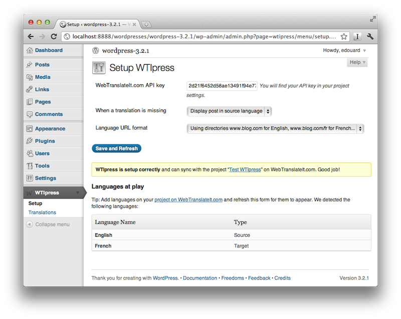
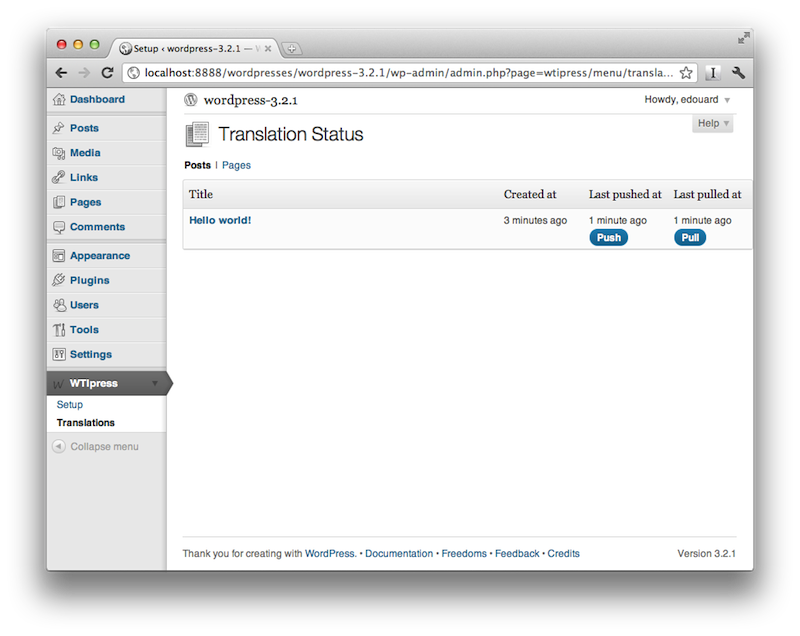
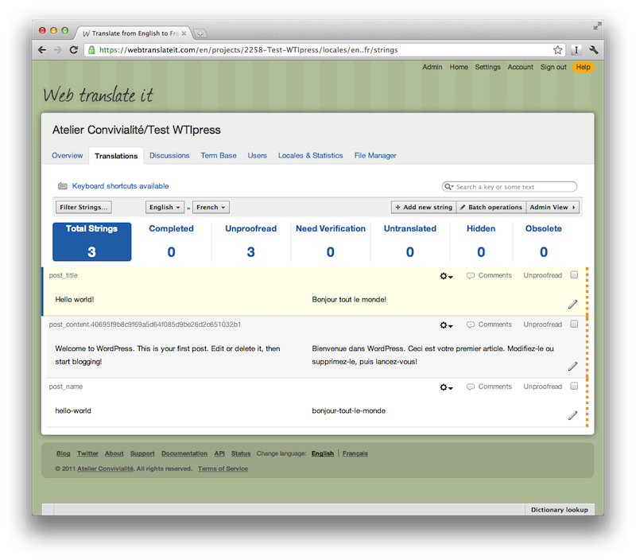
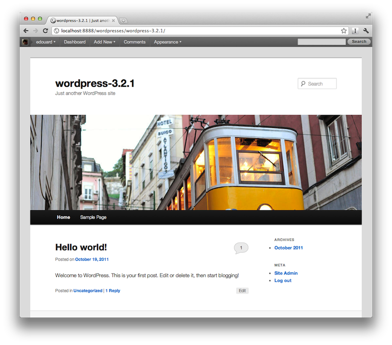
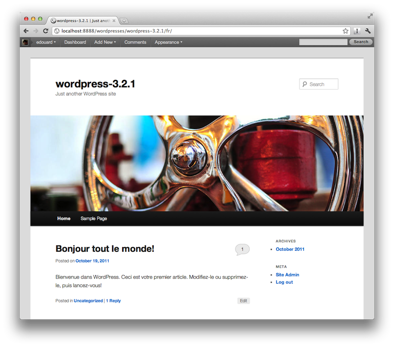

WTIpress is a plugin for Wordpress. It lets you translate posts and pages using the WebTranslateit.com service, and makes your Wordpress blog multilingual.
Project page on GitHub
Installation
- Get an account at WebTranslateit.com. It’s a powerful web-based translation tool.
- Download the latest release at Wordpress.org
- Unzip it, and place it in the
wp-content/plugins folder of your blog.
- Browse the plugins section of your blog, activate the plugin, done.
Benefits
- It takes 2 minutes to make your blog multilingual
- You don’t need to give access to your translators on the blog: they translate directly on WebTranslateIt.
- WebTranslateIt.com is a professional translation tool. You get features such as a translation memory, machine translation... which makes translators work faster.
How does this work?

Synchronize your blog with WebTranslateit.com using the API key.

Push the posts or pages to translate.

Translate your posts using WebTranslateIt.com.

Your blog in English is visible at your usual blog address: www.example.com

Your blog in French is visible at www.example.com/fr
Credits